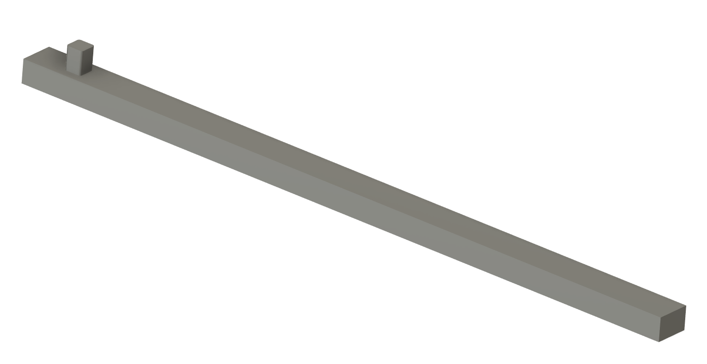

Design CADs:


The material used for this torque wrench is Ti-12Mo-6Zr-2Fe. This metal is a titanium beta alloy.
The material properties of Ti-12Mo-6Zr-2Fe:
Young’s modulus (psi): 9.16e6
Poisson’s ratio: 0.31
Tensile Strength Yield (psi): 130e3
Fracture Toughness (psi sqrt(in)): 80.1e3
Fatigue Strength for 10^6 cycles: 80.8e3
The drive of the wrench was fixed to have 0 displacement on all faces while a force of 600 lbf divided by the moment arm of 14 inches was placed and the end of the handle to simulate a torque.


Max Normal Stress (anywhere) (psi): 54035
Deflection at Load (in): 0.38052
Strain at the Strain Gauge (microstrain): 1298
From FEM analysis the predicted strain was 1298 microstrain. Converting this into mV/V is: 1298 * 10^-6 * 1000 = 1.298 mV.
The strain gauge I selected for this wrench was the: SGD‑1.5/120‑LY13
Type: Half-bridge
Dimensions: 1.5 mm long by 1.2 mm wide